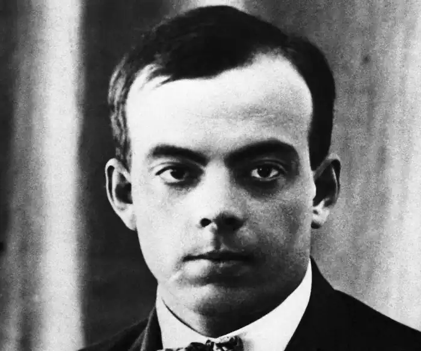
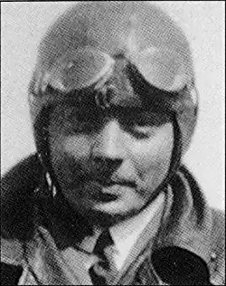
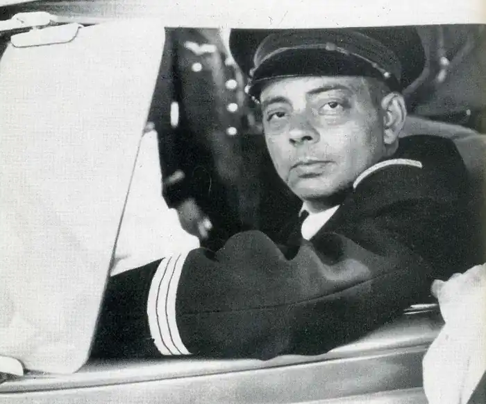
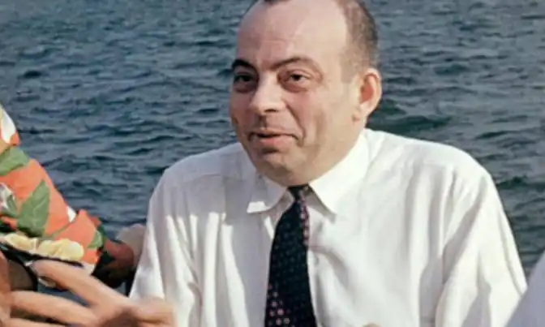

День народження: 29.06.1900 року
Місце народження: Ліон, Франція
Дата смерті: 31.07.1944 року Ім'я Антуана де Сент-Екзюпері не тільки назавжди увійшло в золотий фонд літератури, але і стало синонімом романтики. Нащадок хрестоносців, військовий льотчик, дивовижний письменник і глибокий філософ – він був загадкою за життя і залишився таким навіть у своїй смерті. Відомий французький письменник і легендарний військовий льотчик при народженні отримав кілька імен – Антуан — Марі — Сент-Батист —Роже, але в подальшому житті обходився тільки першим з них. Він став третім з п'ятьох дітей Жана де Сент-Екзюпері, віконта і спадкоємця стародавнього роду перигорских аристократів, і з'явився на світ 29 червня 1900 року у французькому Ліоні. У чотири роки Антуан залишився без батька. Його мати, Марі, уроджена де Фонколомб, красива, освічена і тонко відчуває жінка, стала головною людиною для всього подальшого життя Антуана. Хлопчика багато хто вважав некрасивим – при його зростанні і високому атлетичному складення у нього були неправильні риси обличчя і кирпатий ніс, за який однолітки дражнили його ‘звіздарем'. Але мати називала сина ‘король — сонце' за його рідкісну доброту, веселий незлобивий характер і любов до природи. За сімейною традицією, Антуан навчався в католицьких навчальних закладах. Він навчався в ліонській Школі Братів-християн, потім у католицьких коледжі єзуїтів у Manse і в Швейцарії. У 12 років Антуан вперше піднявся в повітря на літаку, проте не мріяв про польоти, а про море. Він готувався до екзаменів у Вищу військово-морську школу і займалася на підготовчих курсах паризького військово-морського ліцею, але зазнав невдачі на вступних іспитах. Тоді Антуан вирішив стати архітектором і записався вільним слухачем в паризьку Школу витончених мистецтв. У 1921 році, ще до отримання диплома, Сент-Екзюпері призвали в армію. Він не став наполягати на продовженні при відстрочки від скликання, належної йому для завершення освіти, і записався в винищувальний полк. Армійська служба Антуана почалася з роботи в бригаді ремонтників, і несподівано він відчув, що авіація – це його справжнє покликання. Сент-Екзюпері здає іспит на цивільного льотчика, і передислоковується в Марокко, де отримує кваліфікацію військового пілота. У 1921 році, після закінчення офіцерських курсів, він стає молодшим лейтенантом. Військову службу Антуан закінчує вже у Франції. У січні 1923 року його літак потрапить в аварію, пілот отримує травму голови і йде у відставку. Сент-Екзюпері оселяється в Парижі. Він намагається писати, але його літературна творчість нікого не цікавить. Майбутній знаменитий письменник береться за будь-який заробіток, аж до торгівлі книгами та уживаними автомобілями. До того ж Антуан не збирався розлучатися з авіацією, і, незважаючи на перенесені травми, продовжував польоти на цивільних літаках. В цей час він закохується в багату красуню Луїзу де Вільморен. Проте дівчина не брала Сент-Екзюпері всерйоз, на його визнання та пропозиції про шлюб відповідала ухильно, а коли літак, який він відчував, що потрапив в аварію, навіть не провідала потрапив у лікарню Антуана. Поховавши в глибинах свого серця любов до Луїзи, Сент-Екзюпері став удосконалюватися в авіації. У 1926 році він став літати на поштових літаках французької компанії ‘Авиапосталь', що здійснювали рейси в північноафриканські країни. Незабаром Сент-Екзюпері був призначений начальником аеропорту Кар-Джуба, розташованого на краю Сахари. В очікуванні рейсів він знову взявся за перо, і результатом його праць стала рукопис роману ‘Південний поштовий", в яких розповідалося про рейсах в Сахару пілота поштового літака. У 1929 році Сент-Екзюпері повертається у Францію. Він вступає на Вищі курси військово-морської авіації і пропонує свою рукопис видавцям. ‘Південний поштовий', опублікований в кінці 1929 року, зробив свого автора знаменитим і багатим, хоча Луїза де Вільморен продовжувала дивуватися, слухаючи розповіді про свого колишнього поклоннике. У 1930 році Антуана де Сент-Екзюпері призначають технічним директором Південно-Американського відділення ‘Авиапосталь' і нагороджують орденом ‘Почесного легіону" за його внесок у розвиток французької цивільної авіації. У Буенос-Айресі Антуан знайомиться з Консуело, вдовою відомого письменника Гомеса Карило. Ця чарівна і освічена жінка стала його музою і його злим генієм. Екстравагантність і неврівноваженість Консуело часом межували з божевіллям, але Антуан, який ще в дитинстві приручав диких звірів, а в дорослому віці – африканських лис і пум, терпляче зносив усі витівки коханої жінки. У квітні 1930 року вона втекла з урочистої церемонії їх одруження, не дочекавшись кінця, в присутності гостей могла залізти під стіл, розповідала спільним знайомим абсолютно неправдоподібні історії про їхнє життя з чоловіком. У 1931 році компанія ‘Аэропосталь' збанкрутувала, і Сент-Екзюпері повернувся до льотної роботи. У цьому ж році він видав роман ‘Нічний політ", який приніс йому літературную премію "Феміна'. Антуан літає в Африку, Індокитай, Південну Америку, працює кореспондентом газети ‘Парі-суар'. В 1935 році за результатами поїздки в СРСР він публікує серію нарисів, які були прихильно сприйняті радянським керівництвом, завдяки чому твору Сент-Екзюпері регулярно видавалися в нашій країні. У грудні 1935 року Сент-Екзюпері на власному літаку Симун намагається поставити рекорд дальності перельоту Париж – Сайгон, але терпить аварію над Лівійською пустелею. Непрямою винуватицею аварії називали дружину письменника, яка в ніч перед вильотом вирушила в подорож по всьому паризьким барам. Через три дні Сент-Екзюпері і механіка Прево врятували бедуїни, а під враженням аварії був написаний знаменитий "Маленький принц', героїня якого, Троянда, відображає риси характеру Консуело. Восени 1939 року Сент-Екзюпері, який до того часу був володарем ще двох літературних премій за роман "Земля людей', добровільно з'явився в армію. Він зробив декілька бойових вильотів, був представлений до ‘Військової хреста'. Після поразки Франції письменник переїхав до США, де в 1943 році вступив у ВПС ‘Вільних французьких сил', керованих генералом де Голлем. Свій останній виліт Антуан скоїв 31 липня 1944 року. Доля літака і великого письменника залишалася невідомою до 1988 року, коли поблизу Марселя був виявлений браслет з ім'ям льотчика і його дружини. Залишки літака були підняті в 2003 році, але їх дослідження не дало відповіді на питання про те, як саме загинув Антуан де Сент-Екзюпері.